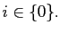

Next: Ellipsoidal dot product derivatives Up: Spherical diffusion tensor Previous: The correlation time gradient Contents Index
The second partial derivative with respect to the geometric parameter  twice is
twice is
|  | (theparentequation.171) |
Edward d'Auvergne 2007-02-19